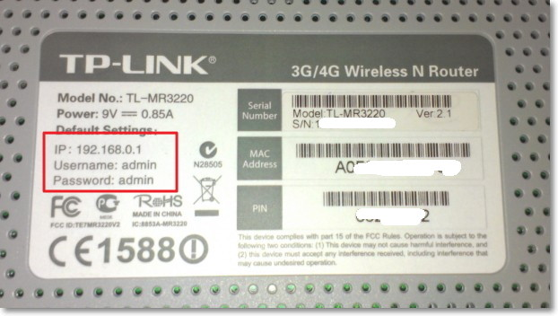

Primero,conecte el módem al enchufe. Luego, conecta el router al módem usando el cable que viene con el router. Este cable va en el puerto que dice "Internet" o otro tipo de cable de red. Después, conecta el router a la corriente y enciéndelo. Por último, conecta tu computadora al router, ya sea con un cable o a la red Wi-Fi que viene predeterminada (puedes encontrar el nombre de la red y la contraseña en una etiqueta pegada en el router).

Para configurar el router, abre tu navegador de Internet (como Google Chrome, Firefox u otro buscador que te guste) en tu computadora o teléfono. Escribe en la barra de direcciones un número como 192.168.0.1 o 192.168.1.1, que es la dirección IP del router. Te pedirá un nombre de usuario y una contraseña, que normalmente es algo como "admin" y "admin", o puedes encontrarlos en la etiqueta del router. O si no tiene una direccionamiento IP como los anteriores debe obtener un cable especial llamado “ ” y con una serie de comandos para configurar.
Una vez dentro del menú de configuración, busca la opción que dice “Configuración inalámbrica” o “Wi-Fi”. Cambia el nombre de la red Wi-Fi por algo que te guste, como "Internet DeCasa". Luego, pon una nueva contraseña para tu Wi-Fi, que sea fácil de recordar pero segura.
En el mismo menú, busca una opción que diga “Configuración de Internet” o “WAN”. Elige la opción automática, llamada "DHCP" (esto es lo más común). Si tu proveedor de Internet te dio instrucciones especiales, síguelas.
Para evitar que otras personas cambien la configuración de tu router, también es recomendable cambiar la contraseña que usaste para entrar al menú. Busca en las opciones algo que diga "Contraseña de administrador" o similar.
Después de hacer estos cambios, asegúrate de guardar todo lo que configuraste. Algunos routers se reinician solos después de guardar, pero si no lo hacen, puedes reiniciarlo manualmente para que los cambios se apliquen.
Ahora, busca la nueva red Wi-Fi desde tu teléfono, computadora o cualquier dispositivo que quieras conectar. Usa la nueva contraseña que pusiste para conectarte.
Finalmente, verifica que todos tus dispositivos puedan conectarse a Internet. Si algo no funciona, puedes desenchufar el router y el módem por unos segundos y luego volver a enchufarlos para reiniciar la conexión.